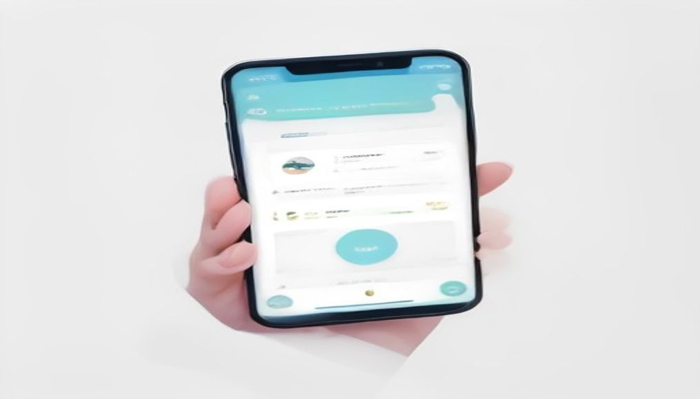
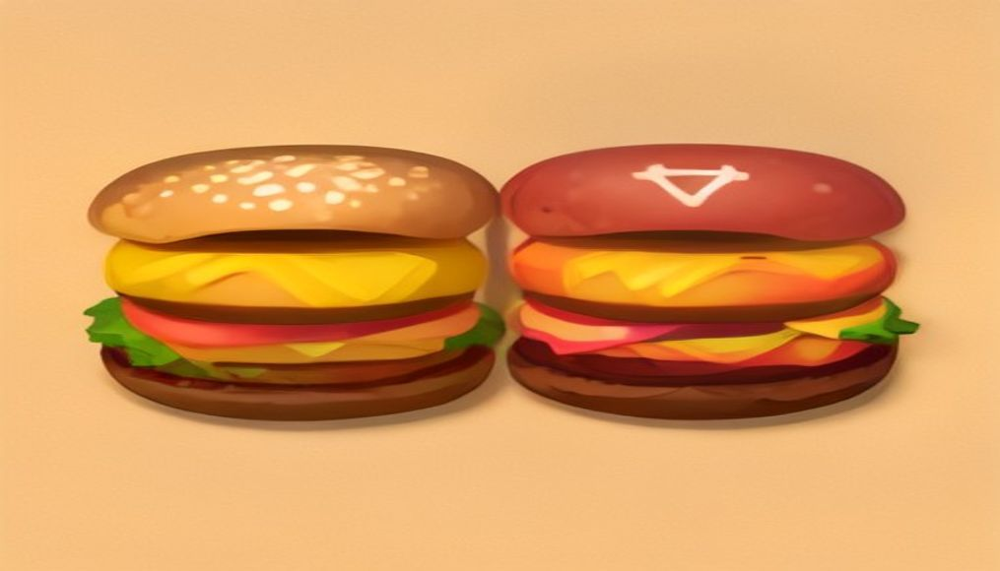
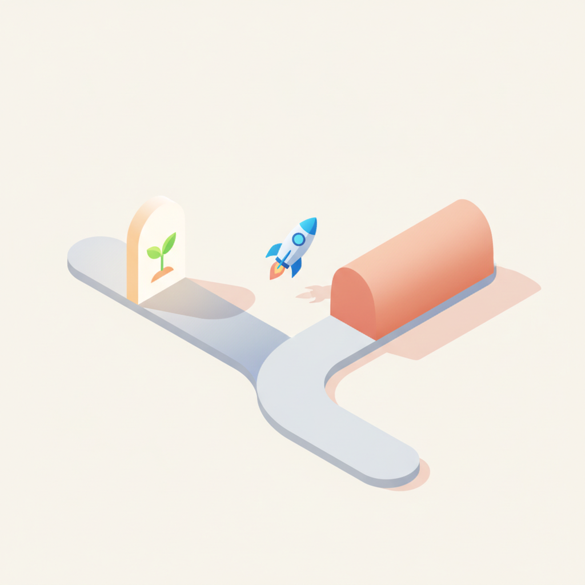
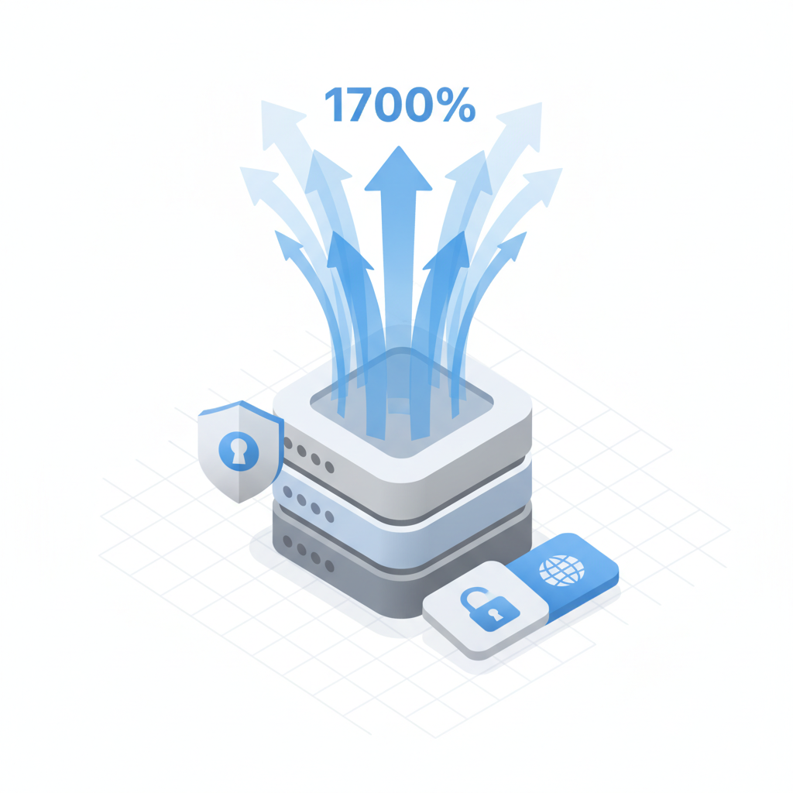
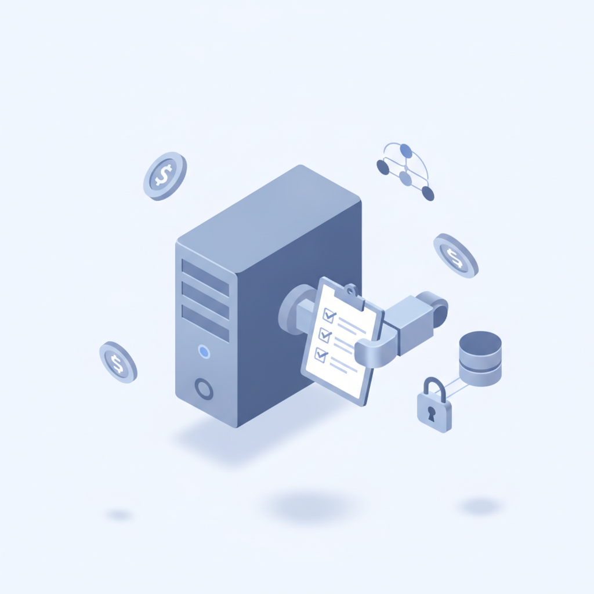
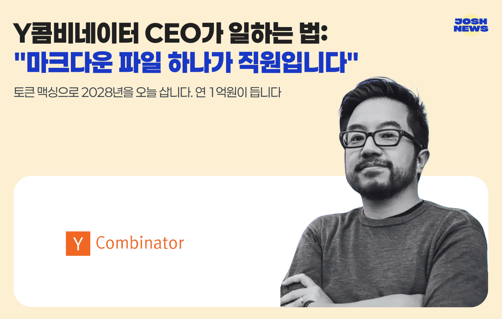

안녕하세요! 수요일 마케팅 소식 전해드립니다 😊 오늘은 빌더조쉬에서 다루는 Y콤비네이터 CEO의 업무 방식이 흥미롭습니다. "마크다운 파일 하나가 직원입니다"라는 표현처럼, 컨텍스트를 가득 채운 문서를 AI에 던져 실제 업무를 처리하는 '토큰 맥싱' 접근법인데요. 연 1억 원의 비용을 들여 2028년의 업무 환경을 지금 당겨 쓰고 있다는 발상 자체가, AI를 보조 도구로 쓰는 수준과는 결이 다른 이야기입니다. AI 에이전트 트래픽이 1700% 증가했다는 클라우드플레어의 진단과 함께 읽으면, 에이전틱 AI로의 전환이 먼 미래가 아니라 지금 현장에서 벌어지고 있는 일임을 확인하게 됩니다.
마케팅 뉴스에서는 올여름 축제 현장이 브랜드 마케팅 채널로 급부상하고 있다는 소식도 챙겨두실 만합니다. 아티스트 라인업만으로 승부하던 페스티벌이, 먹거리·브랜드 팝업·공간 경험을 결합한 여행형 여가 콘텐츠로 진화하면서 브랜드 접점의 성격 자체가 바뀌고 있습니다. 소비자가 '참여하고 싶어서' 찾아오는 공간에 브랜드가 자연스럽게 스며드는 구조인 만큼, 하반기 캠페인을 기획 중이신 분들이라면 오프라인 경험 설계를 전략 안에 넣어두실 시점입니다.
한편 유튜브가 롯데홈쇼핑·GS샵·현대홈쇼핑을 쇼핑 제휴 프로그램 파트너로 추가하면서, 영상 콘텐츠와 커머스의 연결이 국내 유통 채널로도 본격 확장되고 있습니다. 콘텐츠를 보다가 바로 구매로 이어지는 흐름이 홈쇼핑 인프라와 결합하면 어떤 변화를 만들어낼지, 이커머스 전략에서 주의 깊게 살펴볼 지점입니다. 한 주의 중반, 오늘도 좋은 인사이트 가득 챙기시길 바랍니다! 🚀
[ 매드타임스 채성숙 기자] 여름 축제의 흥행 공식이 달라지고 있다. 무대 위 아티스트의 네임밸류만으로 결정되던 축제 경쟁력이 먹거리·브랜드 팝업·포토존·한정 굿즈를 아우르는 복합문화 라이프스타일로 빠르게 재편되고 있다는 빅데이터 분석 결과가 나왔다.종합커뮤니케이션그룹 KPR(사장 김강진) 부설 KPR 인사이트연구소는 워터밤·대구 치맥 페스티벌·인천 펜타포트 락 페스티벌 등 주요 여름 축제와 지역 축제, 브랜드 팝업 관련 온라인 빅데이터를 분석한 결과, 소비자들이 축제를 수동적 관람이 아닌 능동적 체험과 공유의 장으로 소비하고 있음
›
2[ 매드타임스 채성숙 기자] 유튜브가 유튜브 쇼핑 제휴 프로그램(YouTube Shopping affiliate program)의 신규 파트너사로 롯데홈쇼핑·GS샵·현대홈쇼핑을 추가한다.유튜브 쇼핑 제휴 프로그램은 영상, 쇼츠(Shorts), 라이브 스트림 내 제품 태그 기능을 통해 크리에이터의 수익 창출과 비즈니스성장을 효과적으로 지원하고 있다. 2026년 5월 기준 자격을 갖춘 국내 크리에이터 중 40% 이상이 본 프로그램에 등록했으며,한국 출시 이후 누적 400만 개 이상의 동영상에 제휴 제품 태그가 적용됐다. 이에 힘입어 2
›
3맥도날드의 전 최고 마케팅 책임자(Chief Marketing Officer, CMO)가 맥도날드의 가장 유명한 경쟁사 중 하나인 웬디스(Wendy's)의 마케팅 수장으로 자리를 옮겼다. 맥도날드를 가장 잘 아는 마케터가 경쟁 브랜드로 이동하면서 웬디스의 마케팅 전략 변화에도 관심이 모아지고 있다. 26일 업계에 따르면 웬디스는 지난 24일(현지시간) 타리크 하산(Tariq Hassan) 전 맥도날드 CMO를 신임 최고마케팅·고객성장책임자(Chief Marketing and Customer Growth Officer)로 선
› 4※ 다음은 실제 사례를 재 구성하였습니다. 한 광고 에이전시가 클라이언트로부터 신제품 광고 캠페인을 의뢰받았습니다. 기획과 크리에이티브 개발을 거쳐 촬영 콘셉트가 확정됐고, 프로덕션을 선정해 감독과 스태프를 섭외하고 스튜디오와 장비를 예약했으며 촬영을 위한 세트 제작까지 마쳤습니다. 클라이언트와 광고 에이전시, 프로덕션이 함께 참석한 PPM(Pre-Production Meeting)도 마쳤습니다. 콘티와 모델의 의상, 헤어·메이크업, 세트와 소품, 촬영 스케줄까지 최종적으로 확인했으니 이제 남은 것은 촬영뿐이었습니다.다만 한 가지
›
58월 20일, 정부와 국회는 스타트업을 두고 서로 다른 두 개의 문장을 썼다. 이날 중소벤처기업부는 ‘모두의 창업’ 2차 사업의 도전자 모집을 시작했다. 선발 규모는 1차의 두 배인 1만 명이다. 같은 날 국회는 비대면진료 중개 플랫폼의 의약품 도매업을 제한하는 약사법 개정안을 본회의에서 통과시켰다. 발의 후 약 9개월을 끈 이 법안은 업계에서 ‘닥터나우 방지법’으로 불린다. 해당 사업 구조를 ... 더 읽기
›
6클라우드플레어(Cloudflare)가 에이전틱 AI 시대에 맞춰 네트워크와 보안 사업 전략을 재편한다. 회사는 25일 서울 강남구 웨스틴 서울 파르나스에서 미디어 에듀케이션 세션을 열고 ‘에이전틱 인터넷을 위한 기반 구축’과 ‘AI 혁신 속도에 맞춘 보안’을 차세대 사업 전략의 두 축으로 제시했다.
›
7델 테크놀로지스가 AI 에이전트가 조언자를 넘어 스스로 업무를 수행하는 오퍼레이터로 진화하고 있다고 진단했다. 기업의 AI 전환을 위해 데이터·보안·인프라를 통합하고, 급증하는 토큰 사용량과 조직 간 협업까지 함께 관리해야 한다고 강조했다. 유상모 델 테크놀로지스 코리아 사장은 25일 서울 강남구 코엑스에서 열린 ‘델 테크놀로지스 포럼 2026’ 기조연설에서 AI가 스크린 속 도구를 넘어 비즈니스와 일상을 움직이는 새로운 기반이 됐다고 선언했다.
›
토큰 맥싱으로 2028년을 오늘 삽니다. 연 1억원이 듭니다.
브랜드 진단부터 지금 당장 해야 할 우선순위까지,
30분 무료 상담에서 함께 정리해드려요.
이미 수십 개 브랜드가 상담받았습니다.
내 브랜드처럼, 함께 고민하는 팀원의 마음으로 봅니다.
스타트업 대표·마케팅 담당자를 위한 30분